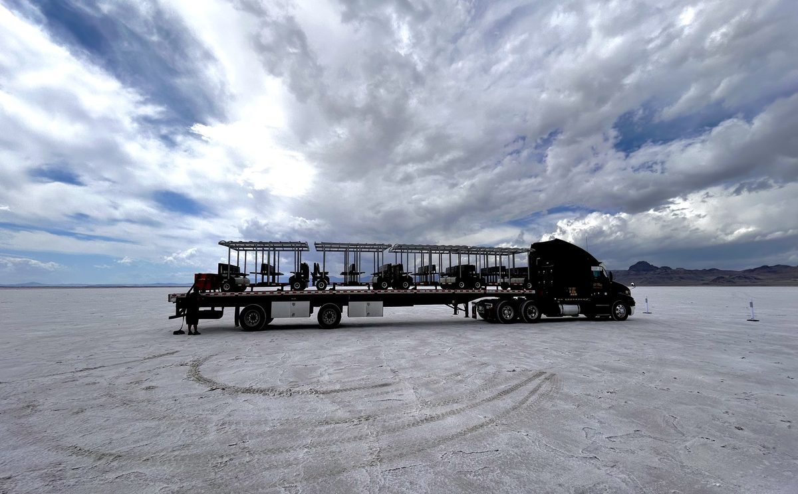

You're two weeks away from a mass transit system.
You just don't know it yet.
When most venue operators hear "mass transit system," they picture decades of planning, billions in capital expenditure, construction disruptions, environmental reviews, and years of public debate before a single passenger boards.
That's the version of mass transit that cities build. Rail lines. Subway extensions. Bus rapid transit corridors with dedicated lanes and elevated stations. The kind of infrastructure that takes 10 years to approve, 5 years to build, and a permanent tax levy to operate.
It's also completely irrelevant to what a stadium, a festival, a cruise terminal, or a data center campus actually needs.
What those properties need is a system — fixed routes, posted schedules, high-capacity vehicles, consolidated boarding points — that moves predictable volumes of people across a known footprint in a known time window. The same principles that make a city transit line work. Just without the concrete, the steel, and the decade of planning.
That's what a FlexTram deployment is. It's turnkey mass transit. And it takes about two weeks.
What "two weeks" actually looks like
Here's the deployment sequence for a typical FlexTram system — from initial conversation to trams running passengers.
Week 1: Route Planning and Operations Design. This is the part most people don't expect — and the part that makes everything else work. Before a single vehicle arrives on the property, we work with the client's operations team to understand the footprint: where people are coming from, where they're going, what the volume looks like at peak, what the ingress and egress windows are, where the bottlenecks form, and where the ADA demand concentrates.
From that, we build a route plan. Not a guess — a plan. Fixed routes mapped to the specific property. Boarding points positioned where the demand actually is, not where it's convenient to park a vehicle. Schedules built around the event timeline, the shift calendar, or the arrival pattern — depending on whether the client is a festival, a warehouse, or a stadium. Heat maps that show when and where passenger volume peaks so the system is staffed for the surge, not the average.
This is the operations consulting layer that turns a collection of vehicles into a transit system. It's also the layer that most venue operators have never had access to — because golf cart rental companies don't provide route planning, and shuttle bus companies run the same loop regardless of the actual demand pattern.
Week 2: Vehicle Delivery, Setup, and Launch. Vehicles arrive. Boarding points are marked. Signage goes up. Drivers are briefed on routes, schedules, and safety protocols specific to the property. The system runs a shakedown before opening to passengers — testing the route timing, the boarding process, and the turnaround procedure.
Then it's live.
No construction. No permanent infrastructure. No utility connections. No permits beyond what the venue already holds for vehicle operations on its own property. The vehicles run on existing pavement, gravel, or grass. The boarding points are designated with signage that deploys and removes in minutes. The whole system can be stood up in the morning and taken down that night if the event is a single day.
Why this surprises people
The reaction we get from most first-time clients is some version of: "Wait — that's it?"
They expected a capital project. They got an operations plan.
The reason it surprises people is that they associate mass transit with infrastructure. And infrastructure means construction, timelines, budgets, disruption. The mental model is a rail line or a bus rapid transit corridor — something that requires pouring concrete and running conduit before the first passenger can board.
FlexTram doesn't require any of that because the vehicle IS the infrastructure. A 27-passenger tram on a fixed route with a posted schedule is a transit line. The route is painted or signed, not poured. The schedule is printed, not programmed into a signal system. The boarding point is a sign and a flat surface, not a platform with a foundation.
The operational result is the same: passengers know where to board, when the vehicle arrives, and where it takes them. The experience is indistinguishable from a permanent transit system. But the deployment model is completely different — it's modular, temporary, and reversible.
That's what makes it turnkey mass transit. You get the system-level benefits of consolidated, scheduled, high-capacity movement without the infrastructure-level commitment of a permanent installation.
The operations layer is the product
The vehicle is what people see. The operations plan is what makes it work.
Any venue can rent a tram. What makes a FlexTram deployment different from renting vehicles is the operations consulting that happens before the first passenger boards.
Route design is built around the specific property — not a generic loop. If the client is a stadium, the route connects the remote lots to the gates along the path of highest pedestrian volume, with boarding points positioned to intercept fans before they commit to the walk. If the client is a festival, the route connects campgrounds, parking, and stages on a circuit designed around the set schedule and the crowd flow patterns between headliners. If the client is a data center campus, the route connects the parking area to the active construction zones on a schedule aligned with shift changes.
Scheduling is built around the demand pattern, not the clock. A stadium deployment runs heavy during the 90-minute ingress window, drops to maintenance frequency during the game, and surges again for post-event egress. A warehouse deployment peaks at shift change and runs lighter between shifts. A festival deployment runs continuously but adjusts vehicle count based on the hour — light in the early afternoon, heavy from 5 PM through midnight. The schedule matches the crowd, not the other way around.
Heat mapping identifies where the demand concentrates and when. At a 100,000-person festival with four stages, 60% of the movement happens between two of them during the headliner transitions. The system doesn't distribute vehicles evenly — it puts them where the people are, when they're there.
This is the difference between renting vehicles and deploying a system. The vehicle is the tool. The operations plan is the product. And the operations plan is what produces the outcomes that matter: shorter wait times, reduced pedestrian congestion, improved ADA access, and the kind of organized, visible, reliable transit that makes a venue feel like it has its act together.
Ready to see what two weeks from now looks like?
Tell us about your footprint — events, ingress windows, parking, ADA demand — and we'll sketch the route plan before the first vehicle ever arrives. Equipment rental or full-service, depending on what your team already has.
What comes with it (and what doesn't)
Here's what a FlexTram deployment includes:
Vehicles. Up to 27 passengers per tram. ADA-compliant as standard. Independently turning axles for navigating tight, dynamic environments. Operates on pavement, gravel, grass, and sand. Compact enough to store when not in use.
Route planning and operations consulting. Property-specific route design, schedule development, boarding point placement, and heat mapping. Not a template — a plan built for the specific footprint and the specific event or operation.
Scheduling and demand modeling. Ingress/egress timing, surge staffing plans, and vehicle deployment schedules matched to the actual demand pattern.
Sponsorship integration support. For clients who want to offset cost or generate revenue, we support the integration of sponsor branding on vehicles and boarding points — including impressions modeling and sponsor-facing materials. At many of our deployments, the sponsorship revenue partially or fully offsets the cost of the system.
Here's what it does not require:
No permanent infrastructure. No concrete pads. No utility connections. No foundations. No construction permits.
No long-term commitment (unless you want one). We offer single-event rentals, seasonal deployments, and long-term leases. A state fair can deploy for 10 days. A stadium can deploy for a 10-game home schedule. A data center campus can deploy for 18 months of construction. The engagement model matches the need.
Two ways to engage — equipment or full service
Not every client wants the same level of support, and not every deployment requires the same operational model. So we built FlexTram to flex.
Option 1: Equipment rental. We provide the vehicles. You provide the drivers and run the operation. This works for clients who already have a staffing infrastructure — event production companies, venue operations teams, parking operators who are building out their curb-to-gate offering. You get the route planning and operations consulting up front, the vehicles arrive ready to run, and your team operates them using the playbook we build together. You own the execution.
Option 2: Full-service deployment. We provide the vehicles, the drivers, and the operational management. This is the turnkey model — the client tells us where people need to go, and we handle everything from route design to daily operations. This works for clients who don't have existing driver labor, don't want to manage a transportation team, or are deploying for a single event where building an internal operations capability doesn't make sense.
Most clients start with one and move to the other over time. A festival might begin with a full-service deployment in year one — let us run it, learn the footprint, prove the concept — and shift to an equipment rental in year two once their ops team has internalized the routes and the operational rhythm. A stadium operator might start with equipment only because they already have a parking team with drivers, then add full-service for a special event where the scale exceeds their internal capacity.
The point is that the system adapts to the client. Not the other way around.
The comparison nobody makes (but should)
Consider what it actually costs — in time, money, and operational complexity — to stand up transit in any other format.
A shuttle bus contract requires sourcing vehicles built for the highway, not for an event site. Charter buses are 40 feet long, require wide turning radii, and can't navigate the internal pathways of most venues. They need dedicated loading zones, often require CDL-licensed drivers (depending on state and configuration), and are sized for the highway, not the last 500 yards.
A golf cart fleet requires renting dozens of individual vehicles, finding dozens of individual drivers, establishing some kind of dispatch protocol, and accepting that 30% utilization is the norm — meaning you're paying for three times the capacity you actually use. There are no routes, no schedules, and no consolidated boarding. Every cart is an independent vehicle making independent decisions.
A permanent people mover — an automated guideway, a fixed tram track, a monorail — requires years of planning, tens of millions in capital, construction disruption, ongoing maintenance infrastructure, and a permanent operational commitment.
A FlexTram system requires two weeks, a flat surface, and a conversation about where your people need to go.
The comparison nobody makes is the one between FlexTram and the permanent infrastructure options — because the assumption is that you need permanent infrastructure to get system-level outcomes. You don't. You need system-level thinking applied to equipment that's already available. That's the gap FlexTram fills.
Turnkey mass transit is a category, not a compromise
The word "turnkey" sometimes gets reduced to "easy" or "simple." That undersells it. Turnkey means complete — every component of the system, from the operations plan to the vehicle to the staffing model (if you want it), delivered as one integrated package. The client doesn't assemble it from parts. They turn the key and it runs.
A FlexTram deployment is flexible in the sense that it deploys and removes without permanent infrastructure, scales to the demand, and adapts to the client's operational model. It's not flexible in the sense that the outcomes are somehow lower quality than a permanent installation. The passenger doesn't know or care whether the boarding point is a concrete platform or a signed location on a paved path. They care that the vehicle arrives on schedule, takes them where they need to go, and does it reliably every time.
The principles are the same ones that have governed effective mass transit for a century: high-capacity shared vehicles, fixed routes, posted schedules, consolidated boarding, predictable frequency. The only difference is the deployment model. Instead of building it permanently and running it forever, you deploy it when you need it and remove it when you don't.
For venues, events, and operations with seasonal, event-driven, or project-based demand — which is most of them — that's not a compromise. It's a better fit.
Cities build permanent transit because the demand is permanent. A stadium has 10 home games. A festival runs for 3 days. A cruise terminal has turnaround days three times a week. A data center construction site has an 18-month build. None of those demand patterns justify permanent infrastructure. All of them justify a system.
Turnkey mass transit gives you the system without the permanence. And the system is what moves people.
Frequently asked questions
How long does it take to deploy a FlexTram system?
About two weeks from initial operational conversation to trams running passengers. Week 1 is route planning and operations design — property-specific fixed routes, boarding points positioned where demand is, schedules built around ingress/egress and shift patterns, heat maps identifying peak concentration points. Week 2 is vehicle delivery, signage, driver briefing, system shakedown, and launch. No construction, no permanent infrastructure, no utility connections, no permits beyond what the venue already holds for vehicle operations on its own property.
What's the difference between equipment rental and full-service deployment?
Equipment rental: FlexTram provides the vehicles + the route planning and operations consulting up front, and the client's team operates them using the playbook we build together. This works for clients with existing staffing — event production companies, venue ops teams, parking operators building out their curb-to-gate offering. Full-service deployment: FlexTram provides vehicles, drivers, AND operational management. This is the turnkey model for clients without existing driver labor, or for single events where building internal transportation capability doesn't make sense. Most clients start with one and migrate to the other over time — full-service in year one to let FlexTram run it and prove concept; equipment-only in year two once the ops team has internalized the routes.
Do you need permanent infrastructure for a FlexTram system?
No. A FlexTram deployment operates on existing pavement, gravel, grass, or sand. Boarding points are marked with portable signage that deploys and removes in minutes. No concrete pads, no utility connections, no foundations, no construction permits. The whole system can stand up in the morning and take down that night if the event is a single day. That's what makes it turnkey — the vehicle IS the infrastructure.
What's included in a FlexTram deployment beyond vehicles?
Route planning and operations consulting (property-specific route design, schedule development, boarding-point placement, heat mapping of demand), scheduling and demand modeling (ingress/egress timing, surge staffing, vehicle deployment schedules matched to actual demand patterns), and sponsorship integration support (branding on vehicles and boarding points, impressions modeling, sponsor-facing materials — at many deployments the sponsorship revenue partially or fully offsets system cost). The vehicle is the tool; the operations plan is the product.
How is FlexTram different from a shuttle bus contract or a golf cart fleet?
Shuttle buses are 40 feet long, built for the highway, require wide turning radii, dedicated loading zones, and often CDL-licensed drivers — and can't navigate most venues' internal pathways. Golf cart fleets are collections of individual vehicles with no routes, no schedules, 30% utilization, and dispersed liability. A permanent people mover requires years of planning, tens of millions in capital, and permanent operational commitment. A FlexTram system delivers the system-level outcomes of consolidated, scheduled, high-capacity movement without the infrastructure-level commitment — two weeks, a flat surface, and a conversation about where your people need to go.
Related reading
Two weeks from now, running.
FlexTram offers equipment rentals, full-service deployments, long-term leases, and turnkey transportation plans for venues, events, campuses, and operations of any size. Tell us where your people need to go and we'll design the system around your footprint.